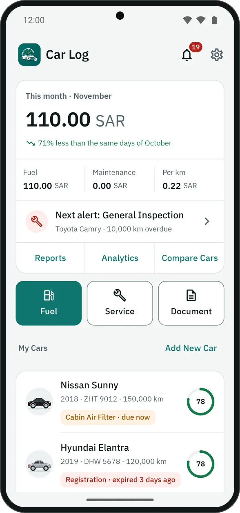
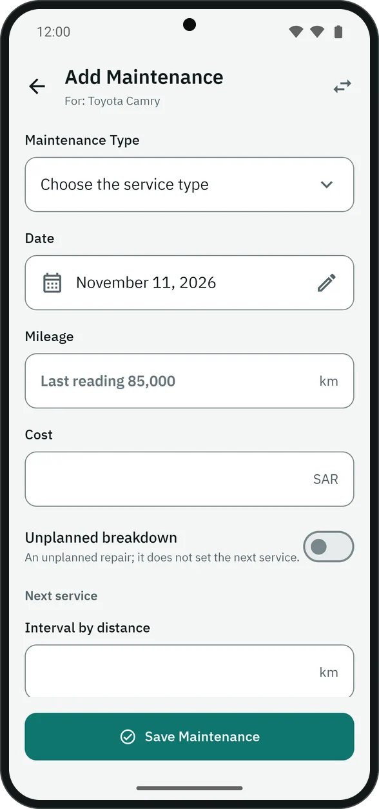
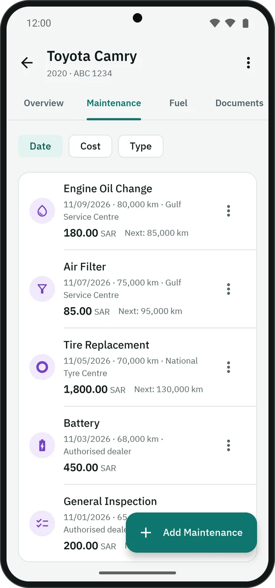

From your first car to your next phone.
Nine steps, each a minute or less. The button names here are the ones you see in the app.
Add your car
- On the home screen, tap “Add New Car”.
- Pick the make and model, and enter the year, plate number and current odometer reading.
- Pick the colour. A photo is optional: without one, the car is drawn in its own colour in the list.
The free version is for one car. With Premium you add as many as you like, and each one shows its most urgent item and its health score on the home screen.

Service and visits
- Open the car, then the “Maintenance” tab, then “Add Maintenance”.
- Pick the type and its interval fills in, with the next service shown by distance and date.
- Enter the odometer, cost and service centre if you like, and attach a photo of the receipt.
A visit with several items
If the garage did more than one thing, tap “Add item” for each. Then choose “Price per item”, or “One total” for the whole visit, which isn’t split across the items.
Breakdowns
Turn on “Unplanned breakdown” for a repair that wasn’t due. It doesn’t set the next service date, and its frequency shows in the car’s health.
Your car’s intervals
From the car’s ⋮ menu → “Service intervals”, change any type’s interval for that car alone, if your dealer’s booklet says otherwise.


Fill-ups
The fill-up form is three places away: the “Fuel” button on the home screen, a long press on the app icon then “Add Fuel Fill-up”, or the fill-up button on the widget.
- The odometer starts from the last reading, so you type only the new one.
- Of litres, price and cost, enter any two and the third is worked out.
- Leave “Full Tank” on when you filled up, since economy is measured between two full tanks.


Documents
- Open the car, then the “Documents” tab.
- The ready documents are there: registration, periodic inspection and insurance. Tap one to add it, or “Add Document” for anything else.
- The expiry date is enough. The number, provider and cost are optional.
Want the date in Hijri? Tap “Enter as Hijri”. Every date shows in both calendars.
Reminders come 30 days before expiry, then 7 days before. Choose the ready documents in Settings → “Ready documents”, the driving licence among them if you want it.

Alerts and car health
The home screen shows the “Next alert”, and each car its most urgent item. All alerts are in “Notifications” (the bell at the top), inside the app only.
Tap the health ring on the car’s page to see how it was worked out: keeping up with service, age and distance driven, breakdown frequency and fuel economy, and how much each counts. Recommendations follow.

Reports and analytics
From the home screen: “Reports” for spending by type, month and year, the monthly average and the monthly budget you set. “Analytics” for the cost per kilometre and how economy changes.
“Compare Cars” Premium puts your cars side by side on health, costs and economy. PDF reports Premium put a car’s history in one file.


Backups and your next phone
- Settings → “Backup & Restore” → “Create Backup”.
- You can protect it with a password: the records and photos are then encrypted, and it restores only with that password. Keep the password somewhere safe.
- The backup is saved in
Download/carLogBackupon your phone (in the app’s folder on Android 9 and earlier), and you can share it or send it to yourself. - On the new phone: install CarLog, then “Backup & Restore” → “Restore from File”.
With Premium: “Automatic Backup” every week, keeping the last five.
Import and export
Importing fill-ups
Settings → “Backup & Restore” → “Import from CSV”. It takes exports from Fuelio and Drivvo, any spreadsheet with the date, odometer and quantity, and CarLog’s own CSV. You check the fill-ups before they’re saved, and it tells you which lines it couldn’t read and why.
CSV export
From the car’s ⋮ menu → “CSV Export”: service, fuel or documents, in a file any spreadsheet opens. Free.
Settings
- Language: Arabic, English, French, Portuguese, Turkish and Malay.
- Currency: 19 currencies. Picked the first time from your phone’s country, and it stays when you change the language.
- Distance unit: kilometres and litres, or miles and gallons.
- Dark mode: light, dark, or as the phone.
- App lock: fingerprint or screen lock, and it locks again after a minute in the background.